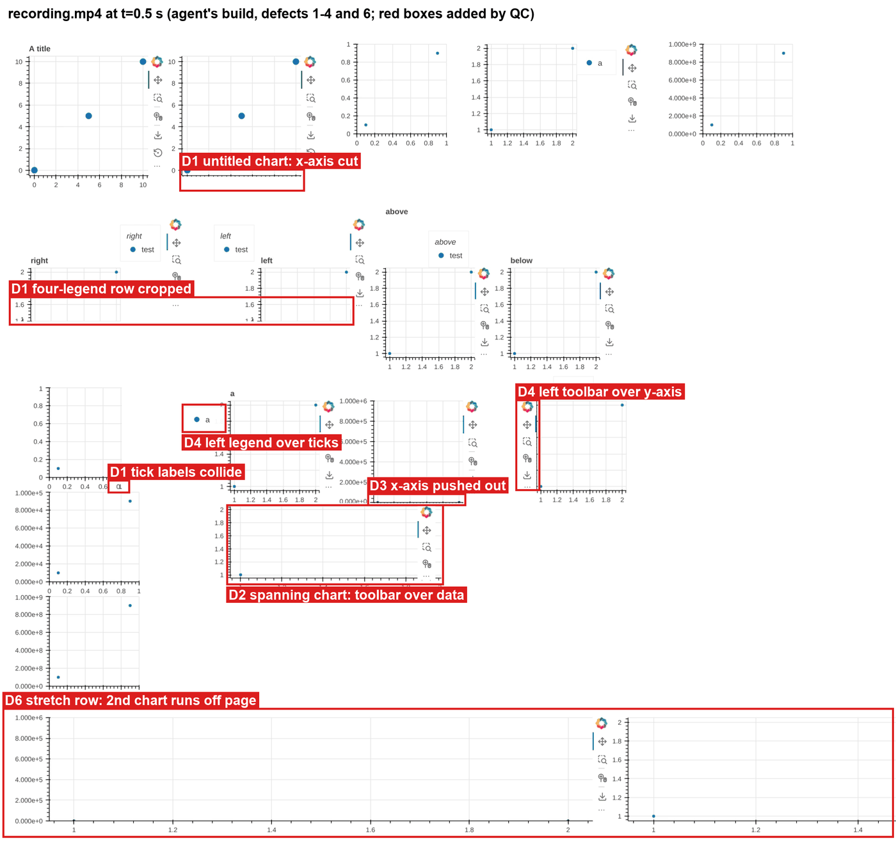
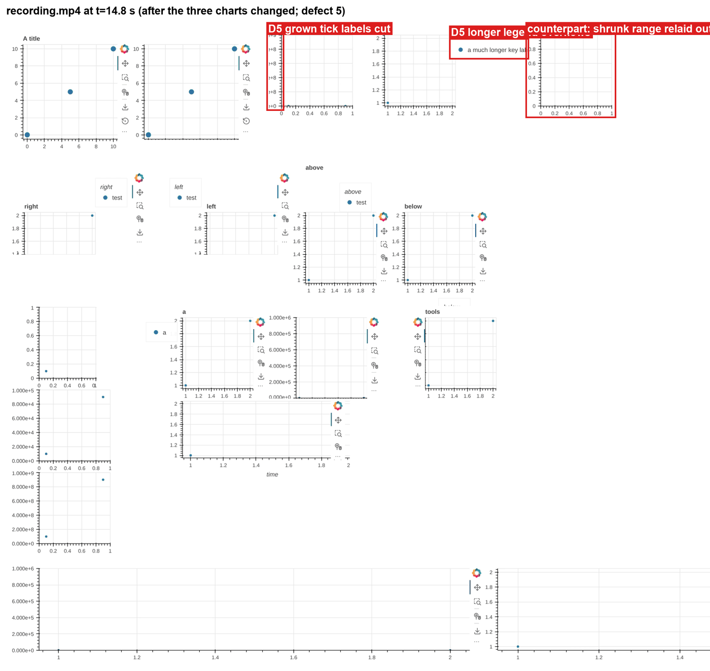
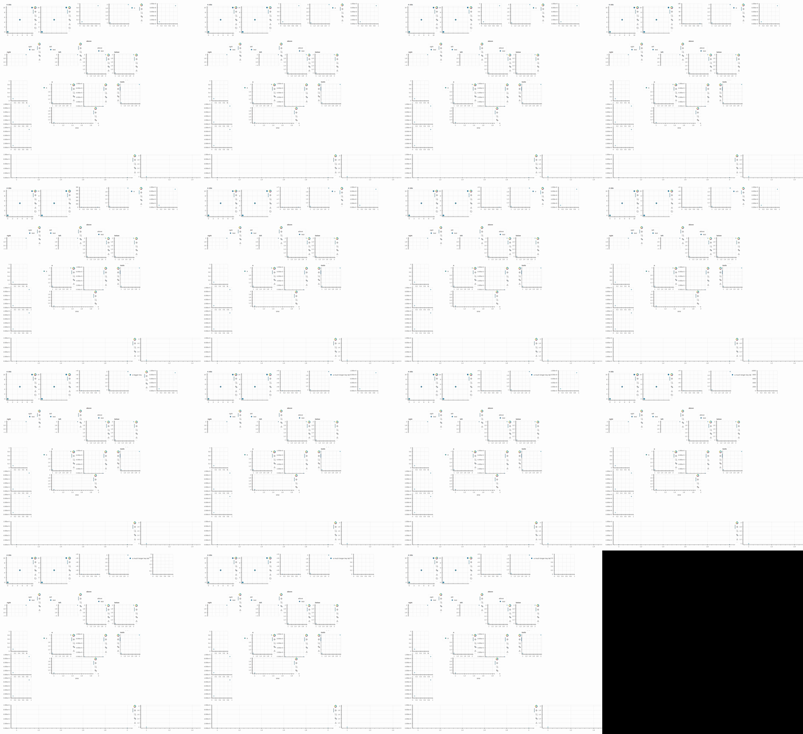

Eval: bokeh__bokeh_15456_mm
All 19 dimensions pass. Difficulty meets Option A: no-image 0/3, with-image exactly 1/4 (dmWFzr6). Local oracle 1.0, nop 0.0 and the re-run are identical to the CB's runs. A per-part cross-check shows each of the six defects is visible in the clip and graded by at least one f2p. Symptom Specificity is a non-fail 3: element types and expected rules are in the text, and the exact defects are left to the clip.
Scorecard
Every dimension in rubric order. Click a cell to see what is wrong (or the evidence, if it passed).
task.toml 7,976 B, instruction.md 1,029 B, evidence_bundle.json 1,084 B, environment/Dockerfile 2,104 B, environment/assets/ASSET_MANIFEST.json 404 B, solution/fix.patch 3,845 B, solution/solve.sh 349 B, tests/config.json 2,001 B, tests/test.patch 28,098 B, tests/test.sh 10,586 B, tests/verifier.py 6,488 B. The three JSON files parse, task.toml parses (tomllib), and python -m py_compile tests/verifier.py is OK. recording.mp4 decodes (ffprobe: h264 2250x2060, 10 fps, 152 frames, 15.2 s). Extra files: README.md and environment/bugs/bug_01..05.patch (injected bugs, applied in the Dockerfile and deleted in the same layer), which are allowed. All files are LF.Tasks/bokeh__bokeh_15456_mm/ and Trials/ are sibling root folders (plus Oracle/, Nop/). Trials/without_images/ holds 3 trials (MAFQ7Vr, WfXan7T, Zniq5zv) and Trials/with_images/ holds 4 (9bbieGm, Nd6MBin, dmWFzr6, jeqnwEM): 7 trials, Option A. The with-image task_manifest.json hashes all 17 bundle files, and every hash matches the reviewed bundle. The without-image job is the same task with the assets removed (checksum c37afe36… vs 50694809…)./app/.harbor_assets empty (ls -la shows only . and ..). Image path /app/.harbor_assets/recording.mp4 resolves (present in the image). Leak scan of instruction.md: no repo name, URL, issue number, file, model or class name (Row, Column, GridBox, FlexBox, Legend, toolbar, axis, frame, sizing_mode, align, border are all absent), and no mechanism. 'row or column' and 'side by side / stacked' are plain words. The only hits are 'whole', 'overlaps' (expected rules) and 'frames' (the ffmpeg tip, meaning video frames).recording.mp4 some charts change …' should read 'In recording.mp4, some charts change …').task_type = "temporal_interaction" (Guidelines Step IV: 'Fix a defect that only appears across a sequence of interactions / state transitions', evidence an ordered sequence). The instruction describes a clip in which 'some charts change what they show' and requires labels and controls to be whole 'at every moment of the clip'. D5 only appears after a state change: 3 f2p tests compare the layout after a change with a fresh render. So the text reasonably falls under the type.| file | role field | what the frames show (how verified) | what name/role/instruction claim | true? | agents confused? |
|---|---|---|---|---|---|
| recording.mp4 | bug_video | the injected build (all six defects; sha256 equals the kit's recording_all_bugs.mp4, recorded from the task image). Frames t=0.5 s and t=14.8 s checked by QC (evidence 01/02) | neutral name; 'charts … change what they show', 'several things go wrong'; description: '15 s browser recording of several groups of scatter charts; partway through, some charts change what they show' | yes | no: every with-image run treated it as the buggy state |
git apply of the bug patch on top of the golden, verifier run, git apply -R; part 1 = reverse of the golden's FlexBox measure_layout hunk). Result:| part removed from the golden | visible in recording.mp4 | reward | tests that fail |
|---|---|---|---|
| D1 FlexBoxView never calls align_borders() (upstream #15456) | pair row: untitled chart's x-axis cut; four-legend row cropped; column tick labels collide (t=0.5 s) | 0.0 | row: outer legends/axes/toolbars inside; row: fixed frames aligned, some titled; column: axes inside, tick widths differ; nested rows+columns uncropped |
| D2 align_borders() swaps c0/c1 (bug_01) | grid: spanning chart's frame cut on the right, toolbar over the data (t=0.5 s) | 0.0 | column: axes inside, tick widths differ; nested rows+columns uncropped; grid: spanning plot uncropped |
| D3 BorderLayout ignores align_border.top (bug_02) | grid: untitled 1e6 chart's frame stretched, x-axis pushed out (chart a beside it correct) | 0.0 | row: outer legends/axes/toolbars inside; row: fixed frames aligned, some titled; nested rows+columns uncropped; grid: fixed frames aligned, some titled |
| D4 left panel DOM not reversed (bug_03) | grid: left legend 'a' covers chart a's ticks; 'tools' chart: left toolbar covers the y-axis (right-side legends correct) | 0.0 | row: outer legends/axes/toolbars inside; nested rows+columns uncropped; legend on the left clear; toolbar on the left clear |
| D5 has_size_changed uses '>' (bug_04) | t=14.8 s: grown tick labels cut ('e+9'), longer legend runs out of its chart (shrinking chart relaid out correctly) | 0.0 | change: tick labels widen; change: legend label longer; change: column tick labels widen |
| D6 stretch flex '1 0 auto' (bug_05) | bottom row: first stretch_width chart takes the whole row, the second runs off the page | 0.0 | stretch row: stay within the row |
r1: r0 + 1, c1: c0 + 1 (inclusive Container convention), so D2 also shows in rows/columns once D1 is fixed. That is why 'golden minus part2' fails the column tests too, and it is consistent.Step 7 (injected parts 2-6): skipping any of them leaves a real bug on a public path: GridBox
col_span children (D2), fixed-frame plots with/without a title in a grid (D3), add_layout(legend, 'left') / toolbar_location='left' (D4), updating a Range1d.end or a legend label after display (D5), sizing_mode='stretch_width' in a row (D6). Complete fix? yes only with all six. Each expected result is stated by an Expected rule, and five of six have a correct counterpart in the clip.temporal_interaction is one of the seven values. The evidence is a 15 s video in which three charts change state, which matches 'ordered screenshot / GIF sequence'. A video instead of 3-8 frames is accepted practice (video-only bundles are valid per the review notes).environment/assets/recording.mp4 sha256 17bc0da3…7e0e, 198,548 B. ASSET_MANIFEST.json: same file, sha256, bytes, container_path /app/.harbor_assets/recording.mp4. evidence_bundle.json: same sha256/bytes, local_path /app/.harbor_assets/recording.mp4, source_kind captured_from_repo with empty url. instruction.md references /app/.harbor_assets/recording.mp4. Dockerfile: COPY assets/recording.mp4 /app/.harbor_assets/; ls /app/.harbor_assets in the image shows recording.mp4.harbor_base (git describe --exact-match = harbor_base): git apply --check /solution/fix.patch OK and git apply --check /tests/test.patch OK. Local oracle solve.sh exit=0, 'Applied fix.patch.'fix.patch paths = files_edited exactly (5 files): bokehjs/src/lib/core/layout/border.ts, core/layout/side_panel.ts, models/layouts/alignments.ts, models/layouts/flex_box.ts, models/plots/plot_canvas.ts. No test, doc, lockfile or changeset path. Test files (plots_in_layouts.ts, gen_junit.mjs, tests.json) live only in test.patch and equal config.json test_files.getBoundingClientRect() / layout bboxes with a 1 px tolerance (near, inside, overlap > 1). The output-form table is therefore empty, and alternative strategies were checked instead:| part | golden form | alternative | source | valid / plausible? | test result |
|---|---|---|---|---|---|
| D1 | FlexBoxView.measure_layout override calling align_borders() | call align_borders() once in the shared LayoutDOMView.measure_layout (and drop the CSSGridBox copy) | Nd6MBin, 9bbieGm submissions | valid and plausible (same pattern, one level up) | accepted: Nd6MBin passed all 4 D1 f2p (11/12, failed only D6) |
| D5 | this.bbox.width != width | Math.abs(this.bbox.width - width) >= 1 | dmWFzr6 | valid and plausible | accepted (12/12) |
| D5 | != | < (relayout only on growth) | 9bbieGm, WfXan7T | not correct: shrinking no longer relays out, a regression of base behaviour | rejected by p2p 'tick labels narrow' (plot 215 px wide after the change vs 184 px fresh): correct rejection |
| D6 | flex 1 0 0px | 1 1 0px, 1 0 0%, flex-basis: 0 + min-width: 0 | by reading the assertion | valid | accepted by construction: the test only checks both charts lie inside the 900 px row (±1 px) |
| D4 | append(...reversed(left_els)) | reverse the layout order instead, or any z-order that keeps the boxes apart | by reading the assertion | valid | accepted: the test compares drawn boxes only (no DOM order, no CSS string) |
| D2/D3 | cols[c0].left, Math.max(…, align_border.top) | equivalent arithmetic, or applying the aligned top border in _set_geometry | by reading the assertion | valid | accepted: frame size and alignment are checked ±1 px |
toolbar_location is set, title iff it has text ('all labels and controls … shown whole'); frame size 150x150 / 200x200 / 380x120 ±1 px (set via frame_width/frame_height: 'keeps the size it was given'); changed-vs-fresh geometry ±1 px ('at every moment of the clip …', i.e. a correct relayout reproduces a fresh render). 'Fix only what the evidence shows' = all six parts (dim 6 cross-check), which the oracle passes. The only rejections in the trials are missing parts (D4, D6) and the < regression. None is a valid alternative.task.toml f2p (12) and p2p (5) lists are identical to config.json, with no overlap. verifier.py load_junit keys each testcase by 'classname name' and by name. Every configured id matches exactly one testcase by name in the oracle JUnit (17 testcases, no duplicates). The runner summary reads '17 passed, 0 skipped, 2434 deselected of total 2451 tests'. gen_junit.mjs requires the summary to account for every selected test.qc114a4:task built from the bundle, every layer a cache hit of the CB's build; --network none): oracle 1.0 (12/12 f2p, 5/5 p2p), nop 0.0 (0/12, 5/5), oracle re-run 1.0 (12/12, 5/5); per-test outcome of the re-run identical: yes. All 12 f2p fail on nop and pass on oracle, both locally and in the CB's runs (8aRTPDe 12/12, d2vMq8Y 0/12).test.sh installs nothing: it runs node make build (incremental) and node make test:unit --grep, and the local runs passed with --network none. Chromium is the build pinned by playwright-core (installed at image build); fonts come from fonts-liberation/fonts-dejavu-core in the image. Timing: tests wait on view.ready plus a 300 ms settle, and assert with 1 px tolerance. No unexplained failure in 7 trials + 3 local runs + 6 cross-check runs. The only p2p failures (9bbieGm, WfXan7T) are caused by their < edit (dim 11).50694809… (with-image, = CB oracle/nop) / c37afe36… (no-image job). No-image: MAFQ7Vr 0.0 (7/12), WfXan7T 0.0 (7/12, p2p 4/5), Zniq5zv 0.0 (4/12), each with /app/.harbor_assets empty. With-image: dmWFzr6 1.0 (12/12), 9bbieGm 0.0 (7/12, p2p 4/5), jeqnwEM 0.0 (11/12, missed D6), Nd6MBin 0.0 (11/12, missed D6). pass@3 no-image = 0/3, pass@4 with-image = exactly 1/4. Run time (informational): agent 2.3-7.7 min no-image, 3.1-15.4 min with-image. No exceptions.align_borders() like CSSGridBox). D2-D6 are one-token regressions of real code paths: a swapped index, a dropped Math.max term, a dropped reversed(), != to >, and a flex basis. Each produces a coherent, visible layout defect, and the fix for each is the obvious one-line change a bokeh developer would write (the golden). Trials show the fixes are reachable: dmWFzr6 found and fixed all six from the clip.qc114a4:task built from the bundle, every layer a cache hit of the CB's build; --network none): oracle 1.0 (12/12 f2p, 5/5 p2p), nop 0.0 (0/12, 5/5), oracle re-run 1.0 (12/12, 5/5); per-test outcome of the re-run identical: yes. Stage banners present ('captured submission.patch', 'applying test.patch', 'running f2p + p2p tests', 'computing reward', reward=). No 'could not apply test.patch'. The CB's runs agree (Oracle 8aRTPDe 1.0, Nop d2vMq8Y 0.0, same checksum as the with-image trials).Delivery gate
Process checks run locally or read from the submitted runs. Each failure is scored under the dimension it belongs to, not as an extra dimension.
--network none.50694809… = with-image trials.git apply --check OK for fix.patch and test.patch at harbor_base.reward= present; runner summary covers all 17 selected tests./app/.harbor_assets empty in each.task_manifest.json hashes all 17 bundle files = reviewed bundle.Tasks/ and Trials/ root siblings, 3 + 4 trials.recording.mp4 (sha256 17bc0da3…).Trials
3 no-image runs (pass@3, all must fail) and 4 with-image runs (pass@4, exactly 1 must pass). Rewards come from each run's verifier/reward.txt.
| Trial | Mode | Reward | f2p | p2p | Min | Failed tests |
|---|---|---|---|---|---|---|
task_without_images__MAFQ7Vr | no-image | 0.0 | 7/12 | 5/5 | 9.0 | row: outer legends nested uncropped legend on the left toolbar on the left stretch row |
task_without_images__WfXan7T | no-image | 0.0 | 7/12 | 4/5 | 4.4 | row: outer legends nested uncropped legend on the left toolbar on the left stretch row p2p: tick labels narrow ('<' edit) |
task_without_images__Zniq5zv | no-image | 0.0 | 4/12 | 5/5 | 4.0 | row: outer legends nested uncropped legend on the left toolbar on the left 3 change tests stretch row |
task_with_images__9bbieGm | with-image | 0.0 | 7/12 | 4/5 | 4.9 | row: outer legends nested uncropped legend on the left toolbar on the left stretch row p2p: tick labels narrow ('<' edit) |
task_with_images__dmWFzr6 | with-image | 1.0 | 12/12 | 5/5 | 16.8 | — |
task_with_images__jeqnwEM | with-image | 0.0 | 11/12 | 5/5 | 12.8 | stretch row |
task_with_images__Nd6MBin | with-image | 0.0 | 11/12 | 5/5 | 14.8 | stretch row |
Issues & suggested fixes
Instruction - Symptom Specificity 3 · [Non-Fail - Image-carried Symptom]
What is wrong. Non-fail flag: the exact defects are carried by the clip, not stated in the text. D6 has no correct stretch row in the clip to compare with. Minor wording: the first sentence lacks a preposition ('
recording.mp4some charts change …' should read 'Inrecording.mp4, some charts change …').
Suggested fix. Optional, for a 5: add one symptom line without causes, e.g. 'Some labels and controls are cut off or drawn over other parts, one drawing area is stretched, and one chart runs out of its row.' Warning: stating the symptoms gives text-only runs a search target, and 0/3 no-image is a hard requirement. Changing instruction.md changes the task checksum, so all 7 trials must be re-run. If you only fix the missing 'In', the re-run is required too.
Dimension details
1. Structure - Task Bundle Files 5 · Pass
| Evidence | All 11 fixed files exist and are non-empty: task.toml 7,976 B, instruction.md 1,029 B, evidence_bundle.json 1,084 B, environment/Dockerfile 2,104 B, environment/assets/ASSET_MANIFEST.json 404 B, solution/fix.patch 3,845 B, solution/solve.sh 349 B, tests/config.json 2,001 B, tests/test.patch 28,098 B, tests/test.sh 10,586 B, tests/verifier.py 6,488 B. The three JSON files parse, task.toml parses (tomllib), and python -m py_compile tests/verifier.py is OK. recording.mp4 decodes (ffprobe: h264 2250x2060, 10 fps, 152 frames, 15.2 s). Extra files: README.md and environment/bugs/bug_01..05.patch (injected bugs, applied in the Dockerfile and deleted in the same layer), which are allowed. All files are LF. |
|---|---|
| What is wrong | Nothing found. |
| Suggested fix |
2. Structure - Deliverables & Packaging 5 · Pass
| Evidence | Tasks/bokeh__bokeh_15456_mm/ and Trials/ are sibling root folders (plus Oracle/, Nop/). Trials/without_images/ holds 3 trials (MAFQ7Vr, WfXan7T, Zniq5zv) and Trials/with_images/ holds 4 (9bbieGm, Nd6MBin, dmWFzr6, jeqnwEM): 7 trials, Option A. The with-image task_manifest.json hashes all 17 bundle files, and every hash matches the reviewed bundle. The without-image job is the same task with the assets removed (checksum c37afe36… vs 50694809…). |
|---|---|
| What is wrong | Nothing found. This attempt was handed over as extracted folders (plus Tasks_attempt4.tar.gz), not as one archive per folder; that is fine for a local check. |
| Suggested fix | When submitting, pack Tasks/ and Trials/ into their own .tar.gz files. |
3. Instruction - Requires the Visual Evidence 5 · Pass
| Evidence | Text only: the instruction names the element types (charts, the area the points are drawn in, labels and controls), the aspects that go wrong (final dimensions, the drawing area, the position of labels and controls) and three general rules. It never says which chart, which side, which change or which layout is wrong. With the text alone a developer cannot tell what to fix or confirm it is complete. Trials confirm it: all 3 no-image runs scored 0.0. Every one missed the left-panel overlap (D4: 'legend on the left' and 'toolbar on the left' f2p) and the stretch row (D6). Zniq5zv also missed D5. Each found /app/.harbor_assets empty (ls -la shows only . and ..). Image path /app/.harbor_assets/recording.mp4 resolves (present in the image). Leak scan of instruction.md: no repo name, URL, issue number, file, model or class name (Row, Column, GridBox, FlexBox, Legend, toolbar, axis, frame, sizing_mode, align, border are all absent), and no mechanism. 'row or column' and 'side by side / stacked' are plain words. The only hits are 'whole', 'overlaps' (expected rules) and 'frames' (the ffmpeg tip, meaning video frames). |
|---|---|
| What is wrong | Nothing found. |
| Suggested fix |
4. Instruction - Symptom Specificity 3 · Non-Fail
[Non-Fail - Image-carried Symptom]
| Evidence | Instruction: "recording.mp4 some charts change what they show. Several things about these charts go wrong in this clip: in the final dimensions of the charts, in the area the points are drawn in, and in the position of the labels and controls." Expected: labels and controls 'shown whole, within the chart's dimensions and without overlaps' at every moment; the drawing area 'keeps the size it was given'; side-by-side charts share one height, stacked ones one width, drawing areas line up, every chart 'stays within the row or column it is placed in'.Check 1 (element by type): passes. Charts, the drawing area, and labels and controls are type nouns, and none hints at the fix. Check 2 (specificity): passes. The general 'go wrong' is followed right away by the three aspects and the rules. Check 3 (image dependency): passes. Which chart, which side and which change stay in the clip, and every claim in the text is true of the clip (QC frames t=0.5 s and t=14.8 s, evidence 01/02).
With-image trajectories (all 4 read): every run read the clipped e+9 tick labels and the overflowing legend (D5) and the row/grid alignment defects (D1-D3). D4 was found by Nd6MBin ('the left-side legend "a" covers the y-axis "1.8" label. The original clip shows the same overlap'), jeqnwEM ('on the "tools" chart … the toolbar covers the y-axis tick labels') and dmWFzr6. 9bbieGm could not render anything ('there's no Chrome here') and missed it. D6 was found only by dmWFzr6 ('a stretch-width chart next to a fixed one took the full row width and pushed the fixed chart off-screen'). 9bbieGm, Nd6MBin and jeqnwEM never mention the bottom row. None of them called it correct, so this is a perception miss, not a run that 'couldn't tell the bug from intended'. No run took a defect for intended behaviour. | |||||||||||||||||||||||||||||||||||||||||||||||||
|---|---|---|---|---|---|---|---|---|---|---|---|---|---|---|---|---|---|---|---|---|---|---|---|---|---|---|---|---|---|---|---|---|---|---|---|---|---|---|---|---|---|---|---|---|---|---|---|---|---|---|
| What is wrong | Non-fail flag: the exact defects are carried by the clip, not stated in the text. D6 has no correct stretch row in the clip to compare with. Minor wording: the first sentence lacks a preposition ('recording.mp4 some charts change …' should read 'In recording.mp4, some charts change …'). | |||||||||||||||||||||||||||||||||||||||||||||||||
| Suggested fix | Optional, for a 5: add one symptom line without causes, e.g. 'Some labels and controls are cut off or drawn over other parts, one drawing area is stretched, and one chart runs out of its row.' Warning: stating the symptoms gives text-only runs a search target, and 0/3 no-image is a hard requirement. Changing instruction.md changes the task checksum, so all 7 trials must be re-run. If you only fix the missing 'In', the re-run is required too. |
5. Instruction - Task Type 5 · Pass
| Evidence | task_type = "temporal_interaction" (Guidelines Step IV: 'Fix a defect that only appears across a sequence of interactions / state transitions', evidence an ordered sequence). The instruction describes a clip in which 'some charts change what they show' and requires labels and controls to be whole 'at every moment of the clip'. D5 only appears after a state change: 3 f2p tests compare the layout after a change with a fresh render. So the text reasonably falls under the type. |
|---|---|
| What is wrong | Nothing found. Non-graded note: 4 of the 6 defects (D1-D4) and D6 are static layout defects visible in the first frame, which visual_bug_fix (also in tags) would fit too. The temporal type is defensible because the evidence is a time sequence and one defect class exists only across a state change. |
| Suggested fix |
6. Image - Evidence Quality 5 · Pass
| Evidence | Naming table:
git apply of the bug patch on top of the golden, verifier run, git apply -R; part 1 = reverse of the golden's FlexBox measure_layout hunk). Result:
r1: r0 + 1, c1: c0 + 1 (inclusive Container convention), so D2 also shows in rows/columns once D1 is fixed. That is why 'golden minus part2' fails the column tests too, and it is consistent.Step 7 (injected parts 2-6): skipping any of them leaves a real bug on a public path: GridBox col_span children (D2), fixed-frame plots with/without a title in a grid (D3), add_layout(legend, 'left') / toolbar_location='left' (D4), updating a Range1d.end or a legend label after display (D5), sizing_mode='stretch_width' in a row (D6). Complete fix? yes only with all six. Each expected result is stated by an Expected rule, and five of six have a correct counterpart in the clip. | ||||||||||||||||||||||||||||||||||||||||
|---|---|---|---|---|---|---|---|---|---|---|---|---|---|---|---|---|---|---|---|---|---|---|---|---|---|---|---|---|---|---|---|---|---|---|---|---|---|---|---|---|---|
| What is wrong | Nothing found. | ||||||||||||||||||||||||||||||||||||||||
| Suggested fix |
7. Metadata - task_type Accuracy 5 · Pass
| Evidence | temporal_interaction is one of the seven values. The evidence is a 15 s video in which three charts change state, which matches 'ordered screenshot / GIF sequence'. A video instead of 3-8 frames is accepted practice (video-only bundles are valid per the review notes). |
|---|---|
| What is wrong | Nothing found. |
| Suggested fix |
8. Evidence - Chain Consistency 5 · Pass
| Evidence | Disk: environment/assets/recording.mp4 sha256 17bc0da3…7e0e, 198,548 B. ASSET_MANIFEST.json: same file, sha256, bytes, container_path /app/.harbor_assets/recording.mp4. evidence_bundle.json: same sha256/bytes, local_path /app/.harbor_assets/recording.mp4, source_kind captured_from_repo with empty url. instruction.md references /app/.harbor_assets/recording.mp4. Dockerfile: COPY assets/recording.mp4 /app/.harbor_assets/; ls /app/.harbor_assets in the image shows recording.mp4. |
|---|---|
| What is wrong | Nothing found. |
| Suggested fix |
9. Golden Fix - Applies Cleanly 5 · Pass
| Evidence | In the built image at harbor_base (git describe --exact-match = harbor_base): git apply --check /solution/fix.patch OK and git apply --check /tests/test.patch OK. Local oracle solve.sh exit=0, 'Applied fix.patch.' |
|---|---|
| What is wrong | Nothing found. |
| Suggested fix |
10. Golden Fix - Source-Only Scope 5 · Pass
| Evidence | fix.patch paths = files_edited exactly (5 files): bokehjs/src/lib/core/layout/border.ts, core/layout/side_panel.ts, models/layouts/alignments.ts, models/layouts/flex_box.ts, models/plots/plot_canvas.ts. No test, doc, lockfile or changeset path. Test files (plots_in_layouts.ts, gen_junit.mjs, tests.json) live only in test.patch and equal config.json test_files. |
|---|---|
| What is wrong | Nothing found. |
| Suggested fix |
11. Tests - Implementation Overfit 5 · Pass
| Evidence | No assertion compares a string, enum, colour, unit or serialized value. Every check is geometric: drawn boxes from getBoundingClientRect() / layout bboxes with a 1 px tolerance (near, inside, overlap > 1). The output-form table is therefore empty, and alternative strategies were checked instead:
toolbar_location is set, title iff it has text ('all labels and controls … shown whole'); frame size 150x150 / 200x200 / 380x120 ±1 px (set via frame_width/frame_height: 'keeps the size it was given'); changed-vs-fresh geometry ±1 px ('at every moment of the clip …', i.e. a correct relayout reproduces a fresh render). 'Fix only what the evidence shows' = all six parts (dim 6 cross-check), which the oracle passes. The only rejections in the trials are missing parts (D4, D6) and the < regression. None is a valid alternative. | ||||||||||||||||||||||||||||||||||||||||||
|---|---|---|---|---|---|---|---|---|---|---|---|---|---|---|---|---|---|---|---|---|---|---|---|---|---|---|---|---|---|---|---|---|---|---|---|---|---|---|---|---|---|---|---|
| What is wrong | Nothing found. | ||||||||||||||||||||||||||||||||||||||||||
| Suggested fix |
12. Tests - f2p/p2p Identifier Validity 5 · Pass
| Evidence | task.toml f2p (12) and p2p (5) lists are identical to config.json, with no overlap. verifier.py load_junit keys each testcase by 'classname name' and by name. Every configured id matches exactly one testcase by name in the oracle JUnit (17 testcases, no duplicates). The runner summary reads '17 passed, 0 skipped, 2434 deselected of total 2451 tests'. gen_junit.mjs requires the summary to account for every selected test. |
|---|---|
| What is wrong | Nothing found. |
| Suggested fix |
13. Tests - p2p Classification 5 · Pass
| Evidence | All 5 p2p pass on local nop, local oracle, oracle re-run, CB oracle (8aRTPDe) and CB nop (d2vMq8Y). They also pass in all 6 'golden minus one part' states. |
|---|---|
| What is wrong | Nothing found. |
| Suggested fix |
14. Tests - Discriminating (f2p) 5 · Pass
| Evidence | Local runs (image qc114a4:task built from the bundle, every layer a cache hit of the CB's build; --network none): oracle 1.0 (12/12 f2p, 5/5 p2p), nop 0.0 (0/12, 5/5), oracle re-run 1.0 (12/12, 5/5); per-test outcome of the re-run identical: yes. All 12 f2p fail on nop and pass on oracle, both locally and in the CB's runs (8aRTPDe 12/12, d2vMq8Y 0/12). |
|---|---|
| What is wrong | Nothing found. |
| Suggested fix |
15. Tests - Determinism 5 · Pass
| Evidence | The re-run gives the same per-test outcome as the first oracle run, and the CB's oracle agrees test for test. test.sh installs nothing: it runs node make build (incremental) and node make test:unit --grep, and the local runs passed with --network none. Chromium is the build pinned by playwright-core (installed at image build); fonts come from fonts-liberation/fonts-dejavu-core in the image. Timing: tests wait on view.ready plus a 300 ms settle, and assert with 1 px tolerance. No unexplained failure in 7 trials + 3 local runs + 6 cross-check runs. The only p2p failures (9bbieGm, WfXan7T) are caused by their < edit (dim 11). |
|---|---|
| What is wrong | Nothing found. Non-graded: [verifier] network_mode = "public" is broader than needed; nothing is fetched at test time, so no-network would also work. |
| Suggested fix |
16. Hardening - Difficulty (Model Trial Fails) 5 · Pass
| Evidence | Option A, 7 trials, all on checksum 50694809… (with-image, = CB oracle/nop) / c37afe36… (no-image job). No-image: MAFQ7Vr 0.0 (7/12), WfXan7T 0.0 (7/12, p2p 4/5), Zniq5zv 0.0 (4/12), each with /app/.harbor_assets empty. With-image: dmWFzr6 1.0 (12/12), 9bbieGm 0.0 (7/12, p2p 4/5), jeqnwEM 0.0 (11/12, missed D6), Nd6MBin 0.0 (11/12, missed D6). pass@3 no-image = 0/3, pass@4 with-image = exactly 1/4. Run time (informational): agent 2.3-7.7 min no-image, 3.1-15.4 min with-image. No exceptions. |
|---|---|
| What is wrong | Nothing found. |
| Suggested fix |
17. Hardening - Real & Feasible 5 · Pass
| Evidence | D1 is the real upstream issue (#15456, PR #15487: Row/Column must call align_borders() like CSSGridBox). D2-D6 are one-token regressions of real code paths: a swapped index, a dropped Math.max term, a dropped reversed(), != to >, and a flex basis. Each produces a coherent, visible layout defect, and the fix for each is the obvious one-line change a bokeh developer would write (the golden). Trials show the fixes are reachable: dmWFzr6 found and fixed all six from the clip. |
|---|---|
| What is wrong | Nothing found. |
| Suggested fix |
18. Gate - Oracle/Nop 5 · Pass
| Evidence | Local runs (image qc114a4:task built from the bundle, every layer a cache hit of the CB's build; --network none): oracle 1.0 (12/12 f2p, 5/5 p2p), nop 0.0 (0/12, 5/5), oracle re-run 1.0 (12/12, 5/5); per-test outcome of the re-run identical: yes. Stage banners present ('captured submission.patch', 'applying test.patch', 'running f2p + p2p tests', 'computing reward', reward=). No 'could not apply test.patch'. The CB's runs agree (Oracle 8aRTPDe 1.0, Nop d2vMq8Y 0.0, same checksum as the with-image trials). |
|---|---|
| What is wrong | Nothing found. |
| Suggested fix |
19. Unauditable 5 · Pass
| Evidence | A complete, auditable task: every claim was checked against the bundle, the image, local runs and the trial logs. |
|---|---|
| What is wrong | Nothing found. |
| Suggested fix |
Visual evidence


